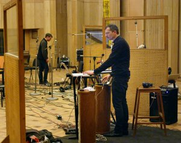

2+2=22 [The Alphabet]

Heinz EmigholzDE 2013-17 – 88 min – Deutsch
B: Heinz Emigholz – K+S: Heinz Emigholz, Till Beckmann
M: Kreidler – T: Till Beckmann
V: Filmgalerie 451 – Mit Kreidler, Natja Brunckhorst
Freies
Remake von Jean-Luc Godards ONE PLUS ONE. Nicht die
Rolling Stones sind hier zu sehen, sondern die Düsseldorfer
Band Kreidler bei der Einspielung ihres Albums „ABC“ .
Das Studio befindet sich in der georgischen Hauptstadt Tiflis,
die in einer Parallelmontage zu den Studioszenen in der
typischen Emigholz’schen Weise porträtiert wird.
samstag 8 okt 20.30 uhr werkstattkino
Heinz Emigholz * 1948 in Achim bei Bremen. Seit 1973 freischaffender Filmemacher, bildender Künstler, Kameramann, Autor, Publizist und Produzent. Von 1993 bis 2013 hatte er den Lehrstuhl für Experimentelle Filmgestaltung an der Universität der Künste Berlin inne. Mitbegründer des dortigen Instituts für zeitbasierte Medien und des Studiengangs Kunst und Medien. Seit 2012 Mitglied in der Sektion Bildende Kunst der Akademie der Künste in Berlin. pym.de
Werk
Photographie und jenseits 1974-2015 – The Basis of Make-Up
I–III 1974-2004 – Miscellanea I–VII 1988–2016 – Architektur
als Auto-
biographie 1993–2013
Filme der 2000er Jahre Goff in
der Wüste 2003 – D’Annunzios Höhle 2005 – Loos ornamental 2008
– Parabeton 2012 (7. UX) – The Airstrip 2014 – Le Corbusier
2015